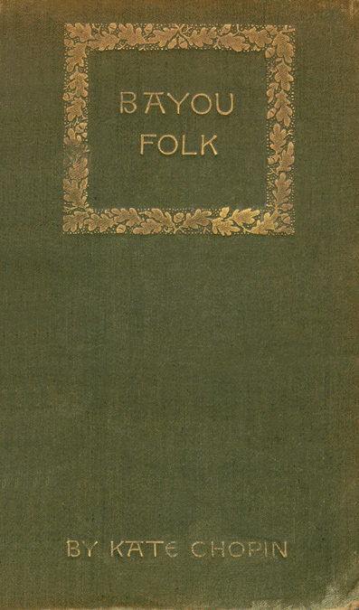
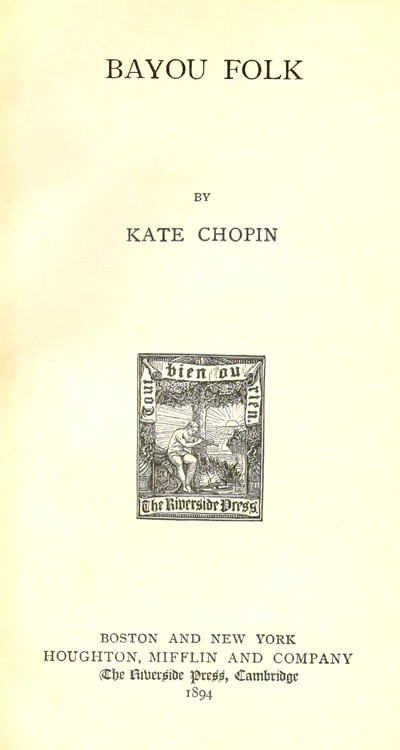

Bayou
Folk:
Electronic Edition
Chopin, Kate, 1851-1904
Text scanned (OCR) by Carlene Hempel
Images scanned by Carlene Hempel
Text encoded by Jennifer Stowe and Natalia Smith
First edition, 1998
ca. 550K
Academic Affairs Library, UNC-CH
University of North Carolina at Chapel Hill,
1998.
© This work is the property of the University of North Carolina at Chapel Hill. It may be used freely by individuals for research, teaching and personal use as long as this statement of availability is included in the text.
Call number 813.49 C549B (Perkins Library, Duke University)
The electronic
edition
is a part of the UNC-CH
digitization project, Documenting the
American
South.
Any hyphens
occurring
in line breaks have been removed, and the trailing part of a
word has been joined to the preceding line.
All quotation
marks and
ampersand have been transcribed as
entity references.
All double right
and left quotation marks are encoded as "
and "
respectively.
All single right
and left
quotation marks are encoded as ' and ' respectively.
Indentation in
lines has
not been preserved.
Running titles
have not
been preserved.
Spell-check and
verification made against printed text using Author/Editor
(SoftQuad) and Microsoft Word spell check programs.
Library of Congress Subject Headings, 21st edition, 1998
-
LC Subject Headings:
- Bayous -- Louisiana -- Fiction.
- Women -- Louisiana -- Fiction.
- Louisiana -- Fiction.
- Louisiana -- Social life and customs -- Fiction.
- United States -- Social life and customs -- 19th century -- Fiction.
- Dialect literature, American.
-
-
1998-05-05,
Natalia Smith, project manager,
finished TEI-conformant encoding and final proofing.
-
-
1998-04-30,
Jennifer Stowe
finished TEI/SGML encoding
-
-
1998-03-20,
Carlene Hempel
finished scanning (OCR) and proofing.


BAYOU FOLK
BY
KATE CHOPIN
BOSTON AND NEW YORK
HOUGHTON, MIFFLIN AND COMPANY
The Riverside Press, Cambridge
1894
Copyright, 1894,
by KATE CHOPIN.
All rights reserved.
The Riverside Press, Cambridge, Mass., U.S.A.
Electrotyped and Printed by H. O. Houghton & Co.
CONTENTS.
Page 1
BAYOU FOLK.
Page 51
IN AND OUT OF OLD NATCHITOCHES.
PRECISELY at eight o'clock every morning except Saturdays and Sundays, Mademoiselle Suzanne St. Denys Godolph would cross the railroad trestle that spanned Bayou Boispourri. She might have crossed in the flat which Mr. Alphonse Laballière kept for his own convenience; but the method was slow and unreliable; so, every morning at eight, Mademoiselle St. Denys Godolph crossed the trestle.
She taught public school in a picturesque little white frame structure that stood upon Mr. Laballière's land, and hung upon the very brink of the bayou.
Laballière himself was comparatively a new-comer in the parish. It was barely six months since he decided one day to leave the sugar and rice to his brother Alcée, who had a talent for their cultivation, and to try his hand at cotton-planting. That was why he was up in Natchitoches parish on a piece of rich, high, Cane River land, knocking
Page 52
into shape a tumbled-down plantation that he had bought for next to nothing.
He had often during his perambulations observed the trim, graceful figure stepping cautiously over the ties, and had sometimes shivered for its safety. He always exchanged a greeting with the girl, and once threw a plank over a muddy pool for her to step upon. He caught but glimpses of her features, for she wore an enormous sun-bonnet to shield her complexion, that seemed marvelously fair; while loosely-fitting leather gloves protected her hands. He knew she was the school-teacher, and also that she was the daughter of that very pig-headed old Madame St. Denys Godolph who was hoarding her barren acres across the bayou as a miser hoards gold. Starving over them, some people said. But that was nonsense; nobody starves on a Louisiana plantation, unless it be with suicidal intent.
These things he knew, but he did not know why Mademoiselle St. Denys Godolph always answered his salutation with an air of chilling hauteur that would easily have paralyzed a less sanguine man.
The reason was that Suzanne, like every one else, had heard the stories that were
Page 53
going the rounds about him. People said he was entirely too much at home with the free mulattoes. 1 It seems a dreadful thing to say, and it would be a shocking thing to think of a Laballière; but it was n't true.
When
Laballière
took possession of his
land, he found the plantation-house occupied
by one Giestin and his swarming family.
It was past reckoning how long the free
mulatto and his people had been there. The
house was a six-room, long, shambling affair,
shrinking together from decrepitude. There
was not an entire pane of glass in the structure;
and the Turkey-red curtains flapped in
and out of the broken apertures. But there
is no need to dwell upon details; it was
wholly unfit to serve as a civilized human
habitation; and Alphonse Laballière would
no sooner have disturbed its contented
occupants than he would have scattered a
family of partridges nesting in a corner of
his field. He established himself with a
few belongings in the best cabin he could
find on the place, and, without further ado,
proceeded to supervise the building of house,
1. A term still applied in Louisiana to mulattoes who were never in slavery, and whose families in most instances were themselves slave owners.
Page 54
of gin, of this, that, and the other, and to look into the hundred details that go to set a neglected plantation in good working order. He took his meals at the free mulatto's, quite apart from the family, of course; and they attended, not too skillfully, to his few domestic wants.
Some loafer whom he had snubbed remarked one day in town that Laballière had more use for a free mulatto than he had for a white man. It was a sort of catching thing to say, and suggestive, and was repeated with the inevitable embellishments.
One morning when Laballière sat eating his solitary breakfast, and being waited upon by the queenly Madame Giestin and a brace of her weazened boys, Giestin himself came into the room. He was about half the size of his wife, puny and timid. He stood beside the table, twirling his felt hat aimlessly and balancing himself insecurely on his high-pointed boot-heels.
"Mr. Laballière," he said, "I reckon I tell you; it 's betta you git shed o' me en' my fambly. Jis like you want, yas."
"What in the name of common sense are you talking about?" asked Laballière, looking up abstractedly from his New Orleans paper. Giestin wriggled uncomfortably.
Page 55
"It 's heap o' story goin' roun' 'bout you, if you want b'lieve me." And he snickered and looked at his wife, who thrust the end of her shawl into her mouth and walked from the room with a tread like the Empress Eugenie's, in that elegant woman's palmiest days.
"Stories!" echoed Laballière, his face the picture of astonishment. "Who - where - what stories?"
"Yon'a in town en' all about. It 's heap o' tale goin' roun', yas. They say how come you mighty fon' o' mulatta. You done shoshiate wid de mulatta down yon'a on de suga plantation, tell you can't res' lessen it 's mulatta roun' you."
Laballière had a distressingly quick temper. His fist, which was a strong one, came down upon the wobbling table with a crash that sent half of Madame Giestin's crockery bouncing and crashing to the floor. He swore an oath that sent Madame Giestin and her father and grandmother, who were all listening in the next room, into suppressed convulsions of mirth.
"Oh, ho! so I 'm not to associate with whom I please in Natchitoches parish. We 'll see about that. Draw up your chair, Giestin.
Page 56
Call your wife and your grandmother and the rest of the tribe, and we 'll breakfast together. By thunder! if I want to hobnob with mulattoes, or negroes or Choctaw Indians or South Sea savages, whose business is it but my own?"
"I don' know, me. It 's jis like I tell you, Mr. Laballière," and Giestin selected a huge key from an assortment that hung against the wall, and left the room.
A half hour later, Laballière had not yet recovered his senses. He appeared suddenly at the door of the schoolhouse, holding by the shoulder one of Giestin's boys. Mademoiselle St. Denys Godolph stood at the opposite extremity of the room. Her sunbonnet hung upon the wall, now, so Laballière could have seen how charming she was, had he not at the moment been blinded by stupidity. Her blue eyes that were fringed with dark lashes reflected astonishment at seeing him there. Her hair was dark like her lashes, and waved softly about her smooth, white forehead.
"Mademoiselle," began Laballière at once, "I have taken the liberty of bringing a new pupil to you."
Mademoiselle St. Denys Godolph paled
Page 57
suddenly and her voice was unsteady when she replied: -
"You are too considerate, Monsieur. Will you be so kine to give me the name of the scholar whom you desire to int'oduce into this school?" She knew it as well as he.
"What 's your name, youngster? Out with it!" cried Laballière, striving to shake the little free mulatto into speech; but he stayed as dumb as a mummy.
"His name is André Giestin. You know him. He is the son" -
"Then, Monsieur," she interrupted, "permit me to remine you that you have made a se'ious mistake. This is not a school conducted fo' the education of the colored population. You will have to go elsew'ere with yo' protégé."
"I shall leave my protégé right here, Mademoiselle, and I trust you 'll give him the same kind attention you seem to accord to the others;" saying which Laballiere bowed himself out of her presence. The little Giestin, left to his own devices, took only the time to give a quick, wary glance round the room, and the next instant he bounded through the open door, as the nimblest of four-footed creatures might have done.
Page 58
Mademoiselle St. Denys Godolph conducted school during the hours that remained, with a deliberate calmness that would have seemed ominous to her pupils, had they been better versed in the ways of young women. When the hour for dismissal came, she rapped upon the table to demand attention.
"Chil'ren," she began, assuming a resigned and dignified mien, "you all have been witness to-day of the insult that has been offered to yo' teacher by the person upon whose lan' this schoolhouse stan's. I have nothing further to say on that subjec'. I only shall add that to-morrow yo' teacher shall sen' the key of this schoolhouse, together with her resignation, to the gentlemen who compose the school-boa'd." There followed visible disturbance among the young people.
"I ketch that li'le m'latta, I make 'im see sight', yas," screamed one.
"Nothing of the kine, Mathurin, you mus' take no such step, if only out of consideration fo' my wishes. The person who has offered the affront I consider beneath my notice. André, on the other han', is a chile of good impulse, an' by no means to blame. As you all perceive, he has shown mo' taste
Page 59
and judgment than those above him, f'om whom we might have expected good breeding, at least."
She kissed them all, the little boys and the little girls, and had a kind word for each. "Et toi, mon petit Numa, j'espère qu'un autre" - She could not finish the sentence, for little Numa, her favorite, to whom she had never been able to impart the first word of English, was blubbering at a turn of affairs which he had only miserably guessed at.
She locked the schoolhouse door and walked away towards the bridge. By the time she reached it, the little 'Cadians had already disappeared like rabbits, down the road and through and over the fences.
Mademoiselle St. Denys Godolph did not cross the trestle the following day, nor the next nor the next. Laballière watched for her; for his big heart was already sore and filled with shame. But more, it stung him with remorse to realize that he had been the stupid instrument in taking the bread, as it were, from the mouth of Mademoiselle St. Denys Godolph.
He recalled how unflinchingly and haughtily her blue eyes had challenged his own.
Page 60
Her sweetness and charm came back to him and he dwelt upon them and exaggerated them, till no Venus, so far unearthed, could in any way approach Mademoiselle St. Denys Godolph. He would have liked to exterminate the Giestin family, from the great-grandmother down to the babe unborn.
Perhaps Giesten suspected this unfavorable attitude, for one morning he piled his whole family and all his effects into wagons, and went away; over into that part of the parish known as l'Isle des Mulâtres.
Laballière's really chivalrous nature told him, beside, that he owed an apology, at least, to the young lady who had taken his whim so seriously. So he crossed the bayou one day and penetrated into the wilds where Madame St. Denys Godolph ruled.
An alluring little romance formed in his mind as he went; he fancied how easily it might follow the apology. He was almost in love with Mademoiselle St. Denys Godolph when he quitted his plantation. By the time he had reached hers, he was wholly so.
He was met by Madame mère, a sweet-eyed, faded woman, upon whom old age had fallen too hurriedly to completely efface all
Page 61
traces of youth. But the house was old beyond question; decay had eaten slowly to the heart of it during the hours, the days, and years that it had been standing.
"I have come to see your daughter, madame," began Laballière, all too bluntly; for there is no denying he was blunt.
"Mademoiselle St. Denys Godolph is not presently at home, sir," madame replied. "She is at the time in New Orleans. She fills there a place of high trus' an' employment, Monsieur Laballière."
When Suzanne had ever thought of New Orleans, it was always in connection with Hector Santien, because he was the only soul she knew who dwelt there. He had had no share in obtaining for her the position she had secured with one of the leading dry-goods firms; yet it was to him she addressed herself when her arrangements to leave home were completed.
He did not wait for her train to reach the city, but crossed the river and met her at Gretna. The first thing he did was to kiss her, as he had done eight years before when he left Natchitoches parish. An hour later he would no more have thought of kissing
Page 62
Suzanne than he would have tendered an embrace to the Empress of China. For by that time he had realized that she was no longer twelve nor he twenty-four.
She could hardly believe the man who met her to be the Hector of old. His black hair was dashed with gray on the temples; he wore a short, parted beard and a small moustache that curled. From the crown of his glossy silk hat down to his trimly-gaitered feet, his attire was faultless. Suzanne knew her Natchitoches, and she had been to Shreveport and even penetrated as far as Marshall, Texas, but in all her travels she had never met a man to equal Hector in the elegance of his mien.
They entered a cab, and seemed to drive for an interminable time through the streets, mostly over cobble-stones that rendered conversation difficult. Nevertheless he talked incessantly, while she peered from the windows to catch what glimpses she could, through the night, of that New Orleans of which she had heard so much. The sounds were bewildering; so were the lights, that were uneven, too, serving to make the patches of alternating gloom more mysterious.
She had not thought of asking him where
Page 63
he was taking her. And it was only after they crossed Canal and had penetrated some distance into Royal Street, that he told her. He was taking her to a friend of his, the dearest little woman in town. That was Maman Chavan, who was going to board and lodge her for a ridiculously small consideration.
Maman Chavan lived within comfortable walking distance of Canal Street, on one of those narrow, intersecting streets between Royal and Chartres. Her house was a tiny, single-story one, with overhanging gable, heavily shuttered door and windows and three wooden steps leading down to the banquette. A small garden flanked it on one side, quite screened from outside view by a high fence, over which appeared the tops of orange trees and other luxuriant shrubbery.
She was waiting for them - a lovable, fresh-looking, white-haired, black-eyed, small, fat little body, dressed all in black. She understood no English; which made no difference. Suzanne and Hector spoke but French to each other.
Hector did not tarry a moment longer than was needed to place his young friend and charge in the older woman's care. He
Page 64
would not even stay to take a bite of supper with them. Maman Chavan watched him as he hurried down the steps and out into the gloom. Then she said to Suzanne: "That man is an angel, Mademoiselle, un ange du bon Dieu."
"Women, my dear Maman Chavan, you know how it is with me in regard to women. I have drawn a circle round my heart, so - at pretty long range, mind you - and there is not one who gets through it, or over it or under it."
"Blagueur, va!" laughed Maman Chavan, replenishing her glass from the bottle of sauterne.
It was Sunday morning. They were breakfasting together on the pleasant side gallery that led by a single step down to the garden. Hector came every Sunday morning, an hour or so before noon, to breakfast with them. He always brought a bottle of sauterne, a paté, or a mess of artichokes or some tempting bit of charcuterie. Sometimes he had to wait till the two women returned from hearing mass at the cathedral. He did not go to mass himself. They were both making a Novena on that account,
Page 65
and had even gone to the expense of burning a round dozen of candles before the good St. Joseph, for his conversion. When Hector accidentally discovered the fact, he offered to pay for the candles, and was distressed at not being permitted to do so.
Suzanne had been in the city more than a month. It was already the close of February, and the air was flower-scented, moist, and deliciously mild.
"As I said: women, my dear Maman Chavan " -
"Let us hear no more about women!" cried Suzanne, impatiently. "Cher Maître! but Hector can be tiresome when he wants. Talk, talk; to say what in the end?"
"Quite right, my cousin; when I might have been saying how charming you are this morning. But don't think that I have n't noticed it," and he looked at her with a deliberation that quite unsettled her. She took a letter from her pocket and handed it to him.
"Here, read all the nice things mamma has to say of you, and the love messages she sends to you." He accepted the several closely written sheets from her and began to look over them.
"Ah, la bonne tante," he laughed, when
Page 66
he came to the tender passages that referred to himself. He had pushed aside the glass of wine that he had only partly filled at the beginning of breakfast and that he had scarcely touched. Maman Chavan again replenished her own. She also lighted a cigarette. So did Suzanne, who was learning to smoke. Hector did not smoke; he did not use tobacco in any form, he always said to those who offered him cigars.
Suzanne rested her elbows on the table, adjusted the ruffles about her wrists, puffed awkwardly at her cigarette that kept going out, and hummed the Kyrie Eleison that she had heard so beautifully rendered an hour before at the Cathedral, while she gazed off into the green depths of the garden. Maman Chavan slipped a little silver medal toward her, accompanying the action with a pantomime that Suzanne readily understood. She, in turn, secretly and adroitly transferred the medal to Hector's coat-pocket. He noticed the action plainly enough, but pretended not to.
"Natchitoches has n't changed," he commented. "The everlasting can-cans! when will they have done with them? This is n't little Athénaîse Miché, getting married!
Page 67
Sapristi! but it makes one old! And old Papa Jean-Pierre only dead now? I thought he was out of purgatory five years ago. And who is this Laballière? One of the Laballières of St. James?"
"St. James, mon cher. Monsieur Alphonse Laballière; an aristocrat from the 'golden coast.' But it is a history, if you will believe me. Figurez vous, Maman Chavan, - pensez donc, mon ami" - And with much dramatic fire, during which the cigarette went irrevocably out, she proceeded to narrate her experiences with Laballière.
"Impossible!" exclaimed Hector when the climax was reached; but his indignation was not so patent as she would have liked it to be.
"And to think of an affront like that going unpunished!" was Maman Chavan's more sympathetic comment.
"Oh, the scholars were only too ready to offer violence to poor little André, but that, you can understand, I would not permit. And now, here is mamma gone completely over to him; entrapped, God only knows how!"
"Yes," agreed Hector, "I see he has been sending her tamales and boudin blanc."
Page 68
"Boudin blanc, my friend! If it were only that! But I have a stack of letters, so high, - I could show them to you, - singing of Laballière, Laballière, enough to drive one distracted. He visits her constantly. He is a man of attainment, she says, a man of courage, a man of heart; and the best of company. He has sent her a bunch of fat robins as big as a tub" -
"There is something in that - a good deal in that, mignonne," piped Maman Chavan, approvingly.
"And now boudin blanc! and she tells me it is the duty of a Christian to forgive. Ah, no; it 's no use; mamma's ways are past finding out."
Suzanne was never in Hector's company elsewhere than at Maman Chavan's. Beside the Sunday visit, he looked in upon them sometimes at dusk, to chat for a moment or two. He often treated them to theatre tickets, and even to the opera, when business was brisk. Business meant a little notebook that he carried in his pocket, in which he sometimes dotted down orders from the country people for wine, that he sold on commission. The women always went together, unaccompanied by any male escort;
Page 69
trotting along, arm in arm, and brimming with enjoyment.
That same Sunday afternoon Hector walked with them a short distance when they were on their way to vespers. The three walking abreast almost occupied the narrow width of the banquette. A gentleman who had just stepped out of the Hotel Royal stood aside to better enable them to pass. He lifted his hat to Suzanne, and cast a quick glance, that pictured stupefaction and wrath, upon Hector.
"It 's he!" exclaimed the girl, melodramatically seizing Maman Chavan's arm.
"Who, he?"
"Laballière!"
"No!"
"Yes!"
"A handsome fellow, all the same," nodded the little lady, approvingly. Hector thought so too. The conversation again turned upon Laballière, and so continued till they reached the side door of the cathedral, where the young man left his two companions.
In the evening Laballière called upon Suzanne. Maman Chavan closed the front door carefully after he entered the small
Page 70
parlor, and opened the side one that looked into the privacy of the garden. Then she lighted the lamp and retired, just as Suzanne entered.
The girl bowed a little stiffly, if it may be said that she did anything stiffly. "Monsieur Laballière." That was all she said.
"Mademoiselle St. Denys Godolph," and that was all he said. But ceremony did not sit easily upon him.
"Mademoiselle," he began, as soon as seated, "I am here as the bearer of a message from your mother. You must understand that otherwise I would not be here."
"I do understan', sir, that you an' maman have become very warm frien's during my absence," she returned, in measured, conventional tones.
"It pleases me immensely to hear that from you," he responded, warmly; "to believe that Madame St. Denys Godolph is my friend."
Suzanne coughed more affectedly than was quite nice, and patted her glossy braids. "The message, if you please, Mr. Laballière."
"To be sure," pulling himself together from the momentary abstraction into which
Page 71
he had fallen in contemplating her. "Well, it 's just this; your mother, you must know, has been good enough to sell me a fine bit of land - a deep strip along the bayou" -
"Impossible! Mais w'at sorcery did you use to obtain such a thing of my mother, Mr. Laballiere? Lan' that has been in the St. Denys Godolph family since time untole!"
"No sorcery whatever, Mademoiselle, only an appeal to your mother's intelligence and common sense; and she is well supplied with both. She wishes me to say, further, that she desires your presence very urgently and your immediate return home."
"My mother is unduly impatient, surely," replied Suzanne, with chilling politeness.
"May I ask, mademoiselle," he broke in, with an abruptness that was startling, "the name of the man with whom you were walking this afternoon?"
She looked at him with unaffected astonishment, and told him: "I hardly understan' yo' question. That gentleman is Mr. Hector Santien, of one of the firs' families of Natchitoches; a warm ole frien' an' far distant relative of mine."
"Oh, that 's his name, is it, Hector Santien?
Page 72
Well, please don't walk on the New Orleans streets again with Mr. Hector Santien."
"Yo' remarks would be insulting if they were not so highly amusing, Mr. Laballiere."
"I beg your pardon if I am insulting; and I have no desire to be amusing," and then Laballière lost his head. "You are at liberty to walk the streets with whom you please, of course," he blurted, with ill-suppressed passion, "but if I encounter Mr. Hector Santien in your company again, in public, I shall wring his neck, then and there, as I would a chicken; I shall break every bone in his body" - Suzanne had arisen.
"You have said enough, sir. I even desire no explanation of yo' words."
"I did n't intend to explain them," he retorted, stung by the insinuation.
"You will escuse me further," she requested icily, motioning to retire.
"Not till - oh, not till you have forgiven me," he cried impulsively, barring her exit; for repentance had come swiftly this time.
But she did not forgive him. "I can wait," she said. Then he stepped aside and she passed by him without a second glance.
Page 73
She sent word to Hector the following day to come to her. And when he was there, in the late afternoon, they walked together to the end of the vine-sheltered gallery, - where the air was redolent with the odor of spring blossoms.
"Hector," she began, after a while, "some one has told me I should not be seen upon the streets of New Orleans with you."
He was trimming a long rose-stem with his sharp penknife. He did not stop nor start, nor look embarrassed, nor anything of the sort.
"Indeed!" he said.
"But, you know," she went on, "if the saints came down from heaven to tell me there was a reason for it, I could n't believe them."
"You would n't believe them, ma petite Suzanne?" He was getting all the thorns off nicely, and stripping away the heavy lower leaves.
"I want you to look me in the face, Hector, and tell me if there is any reason."
He snapped the knife-blade and replaced the knife in his pocket; then he looked in her eyes, so unflinchingly, that she hoped and believed it presaged a confession of
Page 74
innocence that she would gladly have accepted. But he said indifferently: "Yes, there are reasons."
"Then I say there are not," she exclaimed excitedly; "you are amusing yourself - laughing at me, as you always do. There are no reasons that I will hear or believe. You will walk the streets with me, will you not, Hector?" she entreated, "and go to church with me on Sunday; and, and - oh, it 's nonsense, nonsense for you to say things like that!"
He held the rose by its long, hardy stem, and swept it lightly and caressingly across her forehead, along her cheek, and over her pretty mouth and chin, as a lover might have done with his lips. He noticed how the red rose left a crimson stain behind it.
She had been standing, but now she sank upon the bench that was there, and buried her face in her palms. A slight convulsive movement of the muscles indicated a suppressed sob.
"Ah, Suzanne, Suzanne, you are not going to make yourself unhappy about a bon à rien like me. Come, look at me; tell me that you are not." He drew her hands down from her face and held them a while,
Page 75
bidding her good-by. His own face wore the quizzical look it often did, as if he were laughing at her.
"That work at the store is telling on your nerves, mignonne. Promise me that you will go back to the country. That will be best."
"Oh, yes; I am going back home, Hector."
"That is right, little cousin," and he patted her hands kindly, and laid them both down gently into her lap.
He did not return; neither during the week nor the following Sunday. Then Suzanne told Maman Chavan she was going home. The girl was not too deeply in love with Hector; but imagination counts for something, and so does youth.
Laballière was on the train with her. She felt, somehow, that he would be. And yet she did not dream that he had watched and waited for her each morning since he parted from her.
He went to her without preliminary of manner or speech, and held out his hand; she extended her own unhesitatingly. She could not understand why, and she was a
Page 76
little too weary to strive to do so. It seemed as though the sheer force of his will would carry him to the goal of his wishes.
He did not weary her with attentions during the time they were together. He sat apart from her, conversing for the most time with friends and acquaintances who belonged in the sugar district through which they traveled in the early part of the day.
She wondered why he had ever left that section to go up into Natchitoches. Then she wondered if he did not mean to speak to her at all. As if he had read the thought, he went and sat down beside her.
He showed her, away off across the country, where his mother lived, and his brother Alcée, and his cousin Clarisse.
On Sunday morning, when Maman Chavan strove to sound the depth of Hector's feeling for Suzanne, he told her again: "Women, my dear Maman Chavan, you know how it is with me in regard to women," - and he refilled her glass from the bottle of sauterne.
"Farceur va!" and Maman Chavan laughed, and her fat shoulders quivered under the white volante she wore.
Page 77
A day or two later, Hector was walking down Canal Street at four in the afternoon. He might have posed, as he was, for a fashion-plate. He looked not to the right nor to the left; not even at the women who passed by. Some of them turned to look at him.
When he approached the corner of Royal, a young man who stood there nudged his companion.
"You know who that is?" he said, indicating Hector.
"No; who?"
"Well, you are an innocent. Why, that 's Deroustan, the most notorious gambler in New Orleans."
Page 78
Return to Menu Page for Bayou Folk by Kate Chopin
Return to A Digitized Library of Southern Literature, Beginnings to 1920 Home Page
Return to Documenting the American South Home Page